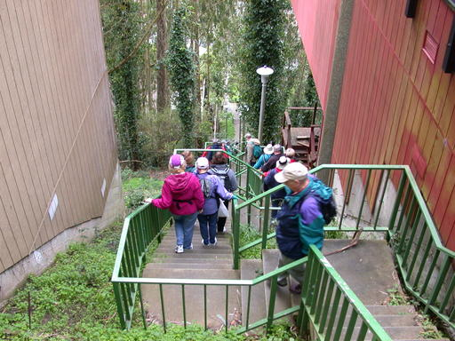
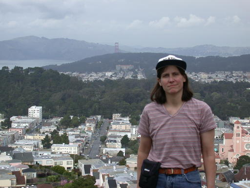

Update
Bruce Baumgart and friends followed more or less the same route and posted their own improved turn-by-turn directions.
Sunday June 26, 2011
Click on the image to view a Google Map with downloadable GPS coordinates information. For some reason, the GMap is initially zoomed all the way out.
Elevation profile from Bikely
Dedication: to Ron Brown, who originally led this hike and who died too young. This month's outing will be my 3rd excursion on his route.
QR quick-link for this web page; or grab the summary flyer
Logistics
When? Sunday June 26, 2011, 10 AM
Where? Squat and Gobble Cafe, 1 West Portal Ave., San Francisco CA 94127
Distance/Elevation Gain? 7.4 miles with about 900 feet of elevation
gain.
Pace? moderate.
Lunch? definitely. Picnic or restaurant is a group decision.
Kids? Sure, especially since participants can turn back at any point on the route.
Carpool? Email me if you're coming from the South Bay or Peninsula.
Don't forget: water bottle, camera, jacket, sunscreen, hat, street map of San Francisco, half a dozen slick electronic gadgets.
Bottom-line summary
We'll follow the Bay Area Ridge Trail route as it gradually ascends to the Twin Peaks area where we'll take in the extraordinary views from Christmas Tree Point and the northernmost Twin Peak. We'll return to West Portal through Forest Knolls, Sunset Heights, Golden Gate Heights, and Forest Hill, enjoying many of San Francisco's neighborhood stairways along the way.
Directions
Meet in front of the Squat and Gobble Cafe at the corner of West Portal Ave. and Ulloa St. (directly across from the West Portal MUNI station). The K, L, and M MUNI train lines stop at West Portal, and these train lines can be accessed at each of the four downtown BART stations, making public transportation an easy alternative. If you drive, unlimited parking is available on the residential streets near the West Portal MUNI on weekends.
Deep Majumdar's photos from 2011 and mine from 2004.

Stairs on Mt. Sutro

Grandview Park
Resources
- Alison's Turn-by-Turn directions and Bikely map. Bikely has arisen from the dead.
- Bay Area Ridge Trail route that first part of hike will follow.
- bahiker's Mt. Davidson page: "Easy 0.44 mile hike to the top of San Francisco's highest hill."
- bahiker's Twin Peaks page: "This 1/2 mile hike is easy. The two hills of Twin Peaks are easily navigated, with moderate but short ascents and descents."
- Map of Mt. Sutro area
- GPX and KML GPS data